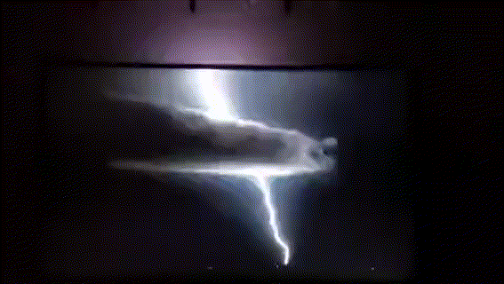

DIY ESP Ambilight
This is a really amazing and surprisingly quick and easy project I think anyone could do.
Our TV is right in front of a white wall and so I thought this is perfect for trying out an ambilight. This is something I wanted to do for a long time, but in the past this was always a rather complicated task and I didn’t really know what I even wanted or what could be done.
Reading into the matter I came across a few things I already heard about but never really paid attention to.
What many people do
And what I think is the way this was done a long time ago is with an Arduino or ESP and FastLED, then some kind of software that communicates over serial and sets the colors.
I have all the needed drivers on my machine, so it would not have been a problem in that regard. But the software was cryptic, also some phishy Chinese executables I found.
I was looking a little longer and found something better.
I came across Prismatik
Installed. Looked nice. A little old-fashioned, but workable. Next up, what controller should I use.
I remembered having some D1 minis around
So why not go a step further than FastLED and save some cables by using the WiFi capabilities of the ESP? A little googling later I came across WLED.
WLED, that’s something. I heard about that. Famous, big community, open source. I like.
So how do I connect it with Prismatik? I found a plugin on GitHub: Prismatik-WLED-WiFi
Nice, I thought. But where is the release of the plugin?
Ahh, no longer continued, because I quote “Hyperion now supports WLED out of the box.”
What is Hyperion now all of a sudden?
I thought. And why did I not hear about it until now and only read about it in the GitHub of a WLED plugin that is no longer maintained?
So here it is: Hyperion on GitHub
The Hyperion GitHub.
Install it. You get a web UI interface, easy and intuitive. Under LED connections - you guessed it - you can connect to your WLED device.
Speaking of WLED
Holy shit this was easy. I never could have imagined.
You go to install.wled.me Plug in your ESP and click install. That’s it. It asks you about your WiFi SSID and password, done.
The locally hosted web admin page of your now fresh ESP based WLED controller opens and you set up your type of addressable LED and the number of them. Done.
In Hyperion
You open the connection tab, choose WLED, there it is already. Click connect.
Go to the setup tab and set the right layout for the LEDs you installed on your TV.
Open the video capture tab, check screen capture, save and done. Now you have ambilight.
Ah, I forgot to mention the LED strip
I had an old, pre-used 5m LED strip from AliExpress laying around that I had once installed behind a cabinet in my old flat.
And I honestly have to say… with WLED that easy to set up, I will never use a single one of those sketchy Chinese LED controllers with their weird high power consumption phishing apps ever again.
Just take a cheap ESP, no matter which one, 8266, 32, mini, does not matter. Flash WLED. Done.
Open source Android app without bloat. Fast, immediate connection. Secure.
What else can you wish for?
Ah yes, and you need to solder the 3 pins of the LED strip and use some external power supply to power the LEDs. Because in my case I use 80 pieces behind the TV which the ESP can obviously not power with its LDO.
But if you read this, you probably know how to solder.
Fine tuning
After the installation and setup, you can even fine-tune your new ambilight in the Hyperion settings.
Set up the provided colors so that the reflection on the wall matches the colors on your TV. You can also set up white balance and even the light reaction delay.
For me that was another 30 minutes of playing around and then I got it perfect.
I really can recommend trying this out. It hugely leveled up the immersion for our movie nights! The fast reaction of the ambient light of only a few milliseconds is at its best (or worst) in jump scare horror movies!
Have fun. :)